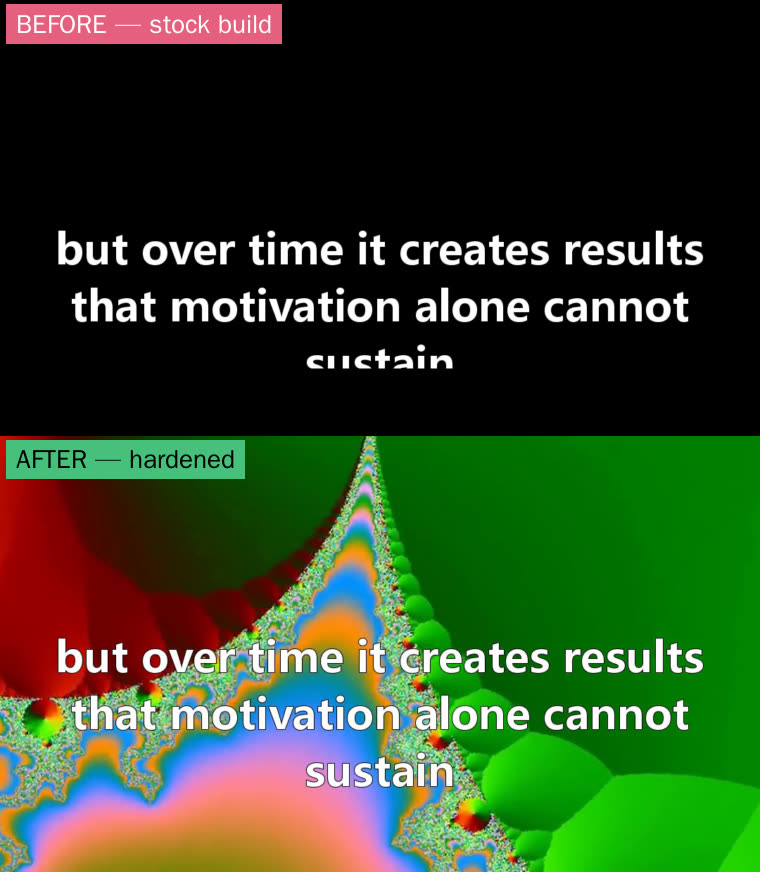
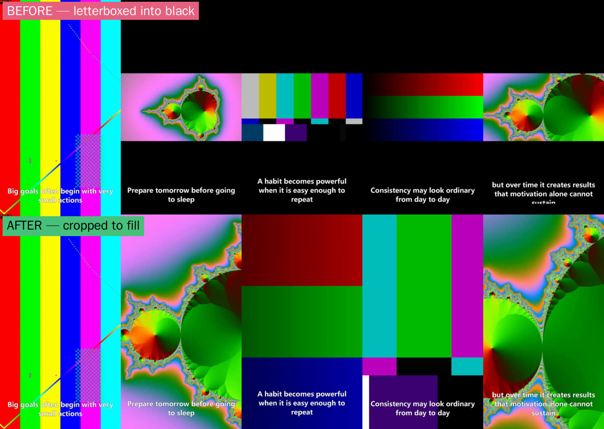

Channel plan v2 · 29 Jul 2026 · niche: conspiracy · tool hardened and re-tested
You were right and I'll say where I went wrong below. Presenting a theory as a theory is not asserting a falsehood, and the platform rules don't treat it as one. Here is your format, the four lines that genuinely do exist, a real weird-news story to open on, and the first script ready to run.
The real lines
Correction
I quoted YouTube as putting "making claims that are demonstrably false" in the no-ads bucket. I cut the sentence in half. The full rule is "claims that are demonstrably false and could significantly undermine participation or trust in an electoral or democratic process" — and its own examples are voting procedures, candidate eligibility, election results and the census.
That is an elections rule. I turned it into a blanket ban on saying anything unproven, and then built an argument on top of it. That was the error, and it was mine.
Here is what is actually written down. Four lines, all narrow, and none of them touch "here is a story, here is a theory about it".
That's the whole surface area. Everything else in this niche — unexplained objects, unsolved cases, declassified programmes, open scientific disputes — sits outside it. Documentary and educational treatment is explicitly listed as fully monetisable.
The format
Your structure, as you described it. The only thing I'd hold firm on is that the facts in the middle have to be real — not because of policy, but because it's what makes the theory land. A theory attached to verified strangeness is compelling. A theory attached to invented strangeness is just a story, and the audience for this niche is unusually good at spotting the difference.
Framed that way we can go at almost anything, including live and contested stories, because we're describing a dispute rather than declaring a winner. That's a stronger position than either "it's aliens" or "it's definitely nothing".
The slate
You asked for random weird news, so file 01 is exactly that — current, live, and genuinely unresolved. The other three are the back catalogue. Every fact below I verified.
A telescope in Chile caught an object that isn't from here — and the first thing scientists did was check whether it was transmitting.
1 July 2025, the ATLAS survey in Río Hurtado, Chile. The object's orbit has an eccentricity of 6.1 — so far past the value that means "bound to the Sun" that there's no argument: it came from another star and it is leaving. Only the third we have ever caught. Within 24 hours of the announcement, the SETI Institute pointed the Allen Telescope Array at it and swept 1 to 9 GHz for narrowband radio — signals nature isn't known to produce. 74 million hits, filtered to about 200 candidates. Every one traced back to Earth or our own satellites.
The theory: a Harvard astrophysicist has publicly catalogued 18 anomalies about it, including a jet pointing toward the Sun rather than away, and argues it isn't a plain comet. He rates it 3 on his own 0–10 scale where 10 means alien technology. He is one voice against a consensus that says comet — but he's a real one, arguing in public, and the dispute is live.
The conspiracy theory that turned out to have a signature on it.
13 March 1962. The Chairman of the Joint Chiefs of Staff, General Lyman Lemnitzer, sent Defence Secretary Robert McNamara a Top Secret memo titled "Justification for US Military Intervention in Cuba" — proposing a staged terror campaign in Miami and Washington, sinking boats carrying Cuban refugees, and faking an attack on a civilian aircraft. Kennedy rejected it. It stayed classified for 35 years until the JFK Assassination Records Review Board released it.
The theory: if this one was written down and signed, the question the video leaves open is how many weren't.
Someone hijacked two TV stations in one night and was never found.
22 November 1987. During WGN-TV's nine o'clock news, the sports segment cut to a figure in a Max Headroom mask swaying in front of corrugated metal. Engineers took about 17 seconds to win the signal back. Two hours later it happened again on WTTW, mid-way through a Doctor Who serial — longer, with distorted audio, and nobody on duty at the tower. The FCC investigated. Nobody has ever been identified.
The theory: overpowering a broadcast tower needed real equipment and real knowledge of where to stand. Which narrows it to a small group of people — and not one of them ever talked.
You can tune in right now. Nobody outside the Russian military knows what it's for.
4625 kHz. A buzz about a second long, repeating twenty to thirty times a minute, for over forty years — the earliest known recording is 1982. Occasionally it stops and a Russian voice reads names and numbers, then it resumes. It belongs to the Russian armed forces. In January 2022 it briefly played pop music and noise that resolved into internet memes on a spectrum analyser, then went back to buzzing.
The theory: the usual explanation is a channel marker holding a frequency open. Which raises the question the video ends on — open for what, and for whose message.
Script one
Past 61 seconds so it clears TikTok's payment floor. Concrete nouns in nearly every line so the footage search has something to grip. Every fact verified — and the theory is flagged as a theory, in the words of the person who actually holds it.
File 01 · target 62–68 seconds · voice: flat, unhurried, no theatrics
On the first of July 2025, a telescope in the Chilean desert caught something moving too fast to belong to us.
Everything in our solar system loops back eventually. This one won't. Its orbit is wide open — it came in from another star, and it is already leaving.
It's only the third we have ever caught. We called it 3-I ATLAS.
And within twenty-four hours, the SETI Institute swung the Allen Telescope Array onto it, and listened. One to nine gigahertz. Narrowband radio — the kind of signal nature isn't known to make.
Seventy-four million hits. Two hundred survived the filtering. Every single one turned out to be us. Our satellites. Our transmitters.
So the answer is: it's a comet.
Except a Harvard astrophysicist has listed eighteen things about it he says a comet shouldn't do — including a jet pointing at the Sun instead of away from it. On his own scale, where ten means alien technology, he rates it a three.
He's one voice against the consensus. He might simply be wrong.
But three isn't zero.
Note what that script never does. It never says it's aliens, and it never says the scientist is right. It reports that the disagreement exists — which is true, checkable, and far more interesting than either side of it.
Tool hardened
Done and verified on this machine while you were deciding.
All 29 bundled tracks deleted. The tool logs "no background music files found" and renders fine without them. Nothing goes out with someone else's soundtrack on it.
My first fix was wrong — I adjusted the position, re-rendered, and it still clipped. The real cause was the size of the text box: it was measured from drawn pixels rather than the font's own line metrics, which runs about a quarter short on a three-line caption. Now sized from font metrics, with a hard clamp as backup.
Mismatched footage is scaled to cover the frame and centre-cropped instead of shrunk onto black. Every frame is full-bleed.


The money
My policy argument was wrong. This one isn't, and it's the part worth arguing about instead.
This niche has nothing to sell. No offer, no commercial query, no page to send anyone to. So it can't be the traffic-vehicle play — it's an audience play, earning from the platform or from something we build later.
Which makes volume the real constraint, not content. The rule that does bite is the one about templates and mass production: ten genuinely researched videos a month is a channel, two hundred templated ones is a strike sequence. The tool still earns its place at ten a month — it removes the editing entirely — but the research becomes the job, and it saves us hours rather than weeks.
So: ten videos, real work behind each, judged on whether people finish them. Watch time is the only number that predicts anything here. If a 60-second history short can't hold an audience to the end, nothing downstream matters and we've spent CPU time finding that out.
Next